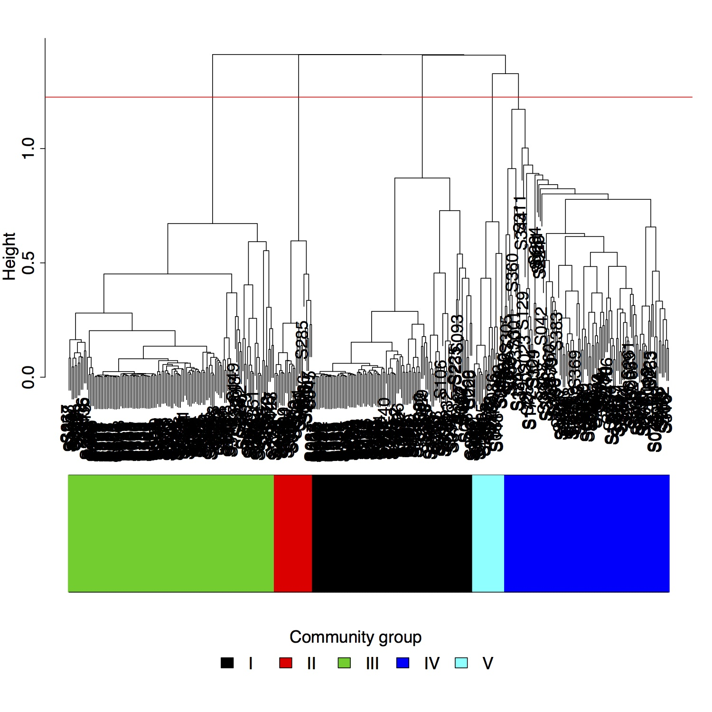

The cluster panel displays a clustering dendrogram of the samples. The distance between samples is calculated using the selected 'Distance method'. The samples are then clustered using the selected 'Cluster method'.
The color bar below the dendrogram makes it possible to view the distribution of metadata values across the samples. There are three main options, each of which may be appropriate in different situations. The 'Unique' option generates a different color for each different value of the variable. This option works well up to about ten values. When there are many more values the selected colors are still unique, however, they become difficult to tell apart. The 'Gradient' option may be used when the color variable is continuous. This option selects colors from a gradient. This makes it easy to distinguish between low and high valued colors. The third option is to use color 'Categories'. This option breaks the color variable up into a user selected number of groups. These groups are then given unique colors.
In order to focus on specific branches of the dendrogram, the subtree cutoff may be used. The 'Subtree cut height' can be used to set the level at which the tree should be separated. The subtrees may then be viewed in the 'Subtrees' tab.
Silhouette plots can be used to determine how well samples cluster into groups. The silhouette plots use the subtree cut height to break the samples into groups. These plots, along with information such as the average silhouette width may be accessed in the 'Silhouette' tab.
Cluster dendrograms can be used to visualize and verify sample clustering. For example, the figure below shows a dendrogram generated using the Ravel et al. dataset. The community groups are apparent.
stats::hclust - conduct hierarchical clustering
stats::cutree - cut a tree into groups of data
vegan::vegdist - get dissimilarity indices
WGNA::plotDendroAndColors - make dendrogram plot with color annotation
cluster::silhouette - plot silhouette
Jari Oksanen, F. Guillaume Blanchet, Roeland Kindt, Pierre Legendre, Peter R. Minchin, R. B. O'Hara, Gavin L. Simpson, Peter Solymos, M. Henry H. Stevens and Helene Wagner (2013). vegan: Community Ecology Package. R package version 2.0-10. http://CRAN.R-project.org/package=vegan
Langfelder P and Horvath S, WGCNA: an R package for weighted correlation network analysis. BMC Bioinformatics 2008, 9:559 doi:10.1186/1471-2105-9-559
Peter Langfelder, Steve Horvath (2012). Fast R Functions for Robust Correlations and Hierarchical Clustering. Journal of Statistical Software, 46(11), 1-17. URL http://www.jstatsoft.org/v46/i11/.
Maechler, M., Rousseeuw, P., Struyf, A., Hubert, M., Hornik, K.(2013). cluster: Cluster Analysis Basics and Extensions. R package version 1.14.4.